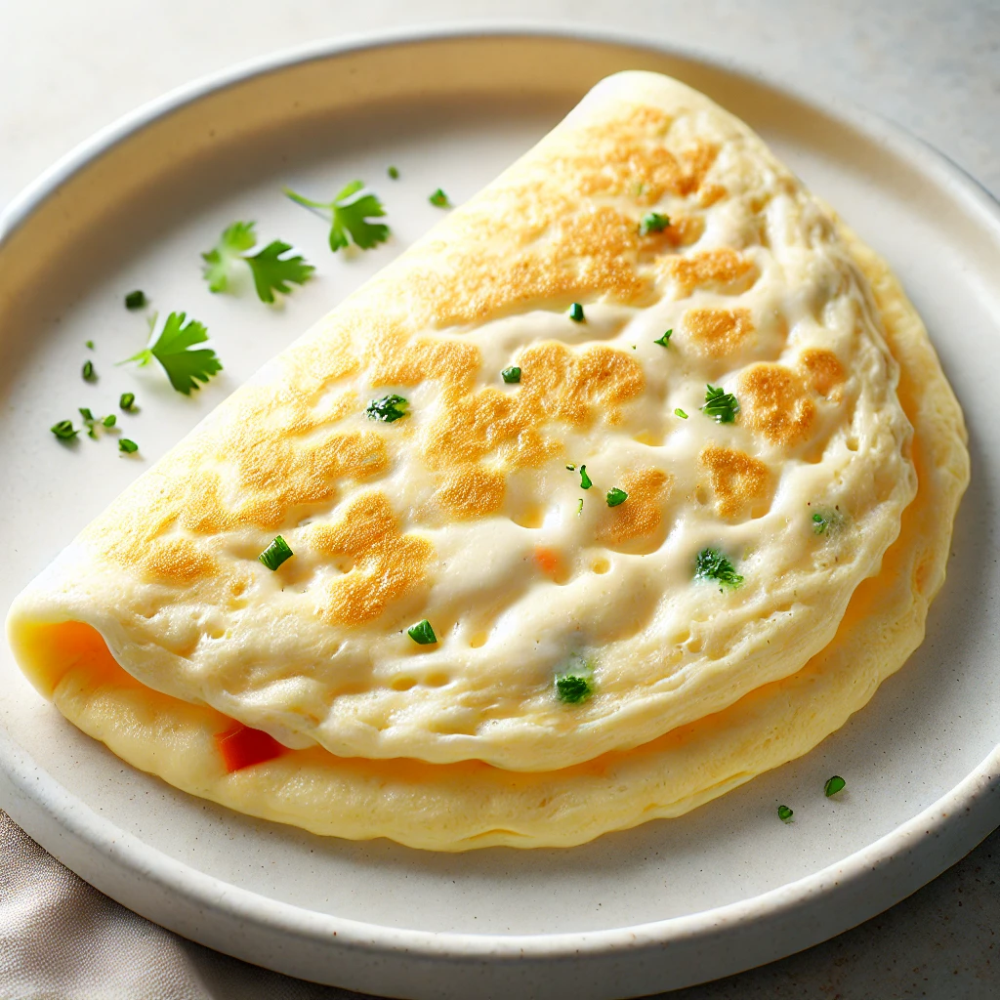

Egg White omelette

Description
This egg white omelette is a light, fluffy, and healthy meal, featuring minimal vegetables and fresh herbs for a subtle flavor. Perfectly cooked with a clean, white appearance, it offers a protein-packed, low-calorie option for a nutritious breakfast or snack.
Ingredients
- 4 egg whites
- A handful of finely chopped spinach or bell peppers (optional)
- Salt and pepper to taste
- Fresh parsley or chives for garnish
- Olive oil or cooking spray for the pan
Steps
- Lightly grease a non-stick pan with olive oil or cooking spray and heat over medium-low heat.
- In a bowl, whisk the egg whites with a pinch of salt and pepper until slightly frothy.
- Pour the egg whites into the heated pan, tilting the pan to spread the mixture evenly.
- Cook for 2-3 minutes, or until the bottom is set and the edges start to lift.
- Add any finely chopped vegetables (like spinach or bell peppers) on one half of the omelette.
- Gently fold the other half of the omelette over the filling using a spatula.
- Cook for another minute until fully cooked through, then slide onto a plate.
- Garnish with fresh parsley or chives and serve warm.